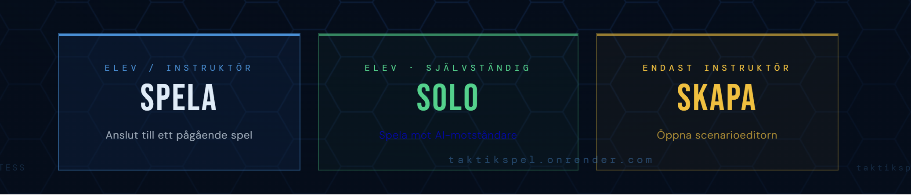
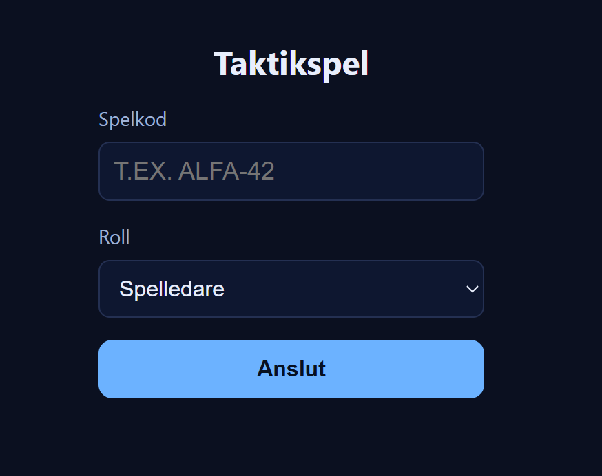
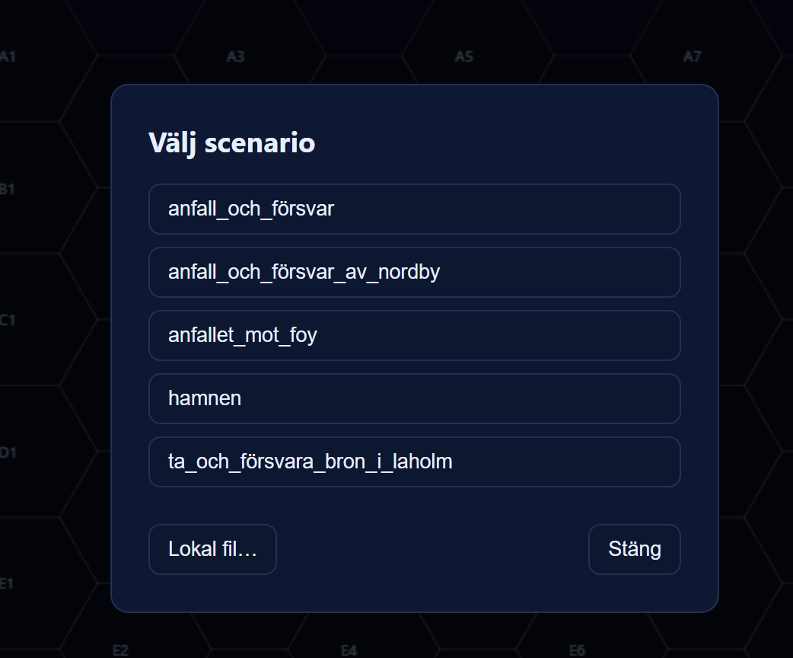
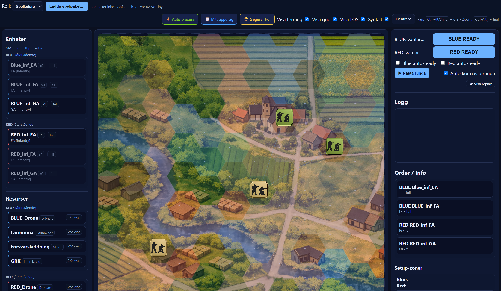
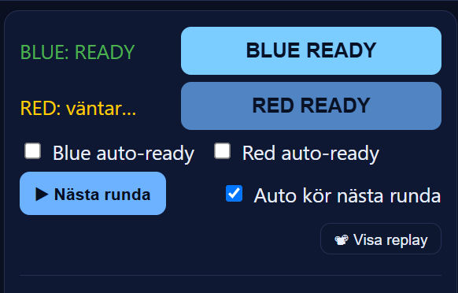
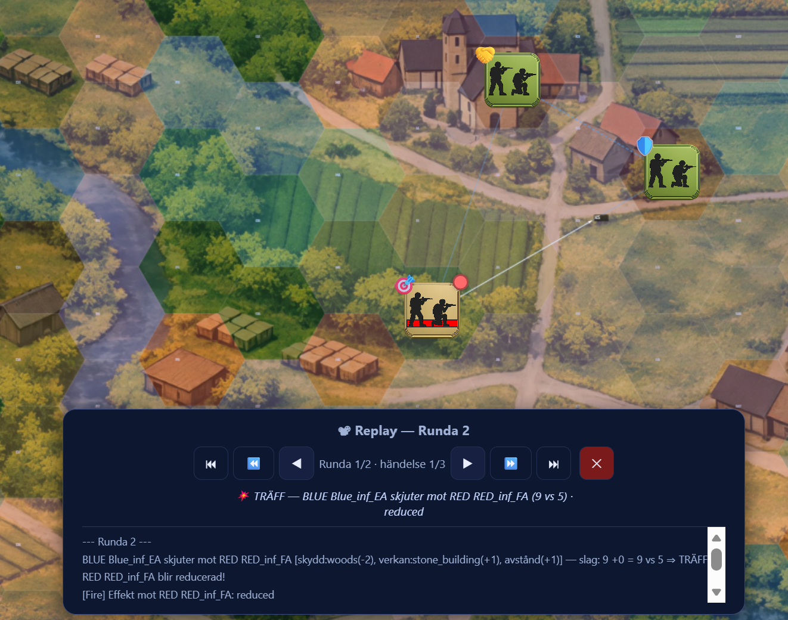
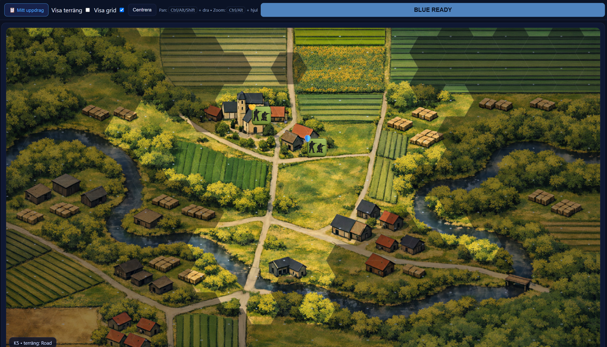
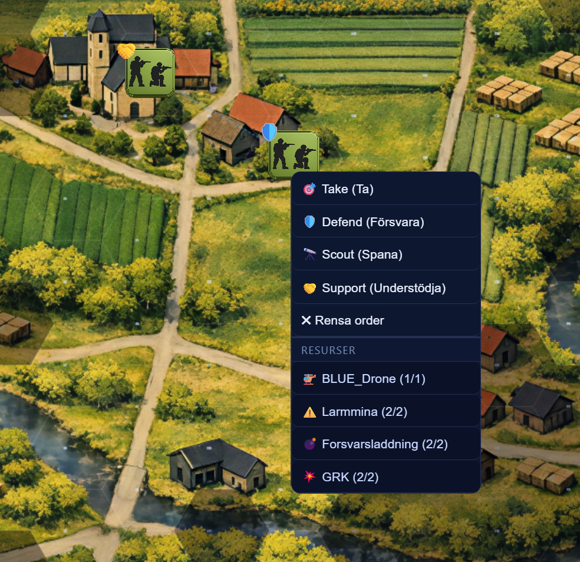
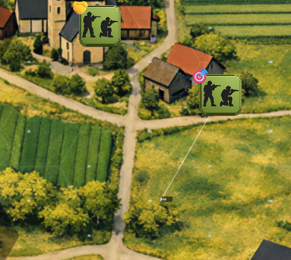
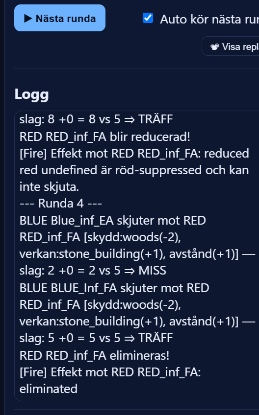

Spela ett spel
Den här handledningen täcker alla roller — spelledare och spelare. Läs avsnitten för din roll och hoppas över det som inte gäller dig.
01 Vad är Digital Tactics Trainer?
Digital Tactics Trainer (DTT) är ett webbaserat taktikspel för militär utbildning. Det simulerar infanteristrid på hexkarta och kan spelas ensam (solo) eller med en spelledare och deltagare uppkopplade via webbläsaren.
GM — Spelledare
Ser hela kartan, laddar scenario, kör rundorna och bestämmer hur spelet slutar. Vanligtvis instruktören.
Blue — Spelaren
Styr blå enheter på kartan. Ser bara det som egna enheter har siktlinje till — fog of war gäller. Kan inte se hur spelet är upplagt bakom kulisserna.
Red — Motstånd
I solo-läge styrs röd av AI:n. I ett PvP-spel kan en annan deltagare eller GM spela röd.
02 Starta som spelare Blue / Red
Som spelare i ett PvP-spel ansluter du dig till ett pågående spel som GM har startat. Du laddar inte scenariot själv — det gör GM.

PvP — anslut till GM:s spel
- Öppna spelet i webbläsaren
- Välj roll: Blue eller Red
- Ange spelkoden du fått av GM
- Klicka Anslut
- Vänta — GM laddar scenariot och startar
Solo — spela ensam
- Öppna spelet i webbläsaren
- Välj roll: Blue
- Klicka Solo-läge (ingen kod behövs)
- Välj scenario ur listan och ladda det
- Läs överlämningen och starta

03 Starta och leda ett spel GM
Som GM förbereder du spelet och leder det under hela övningen. Det är du som laddar scenariot, skickar ut spelkoden och kör rundorna.
Öppna spelet och välj GM
Navigera till spelets adress i webbläsaren. Välj rollen GM i rollmenyn.
Ange en spelkod och anslut
Hitta på en valfri spelkod, t.ex. ÖVNING1. Klicka Anslut. Dela sedan koden med deltagarna — de använder samma kod för att ansluta som Blue/Red.
Ladda scenariot
Klicka på Välj scenario i GM-panelen och välj ett scenario ur listan. Kartan och enheterna laddas automatiskt och skickas ut till alla anslutna deltagare.

Vänta in deltagarna
Kontrollera att deltagarna har anslutit och ser kartan. Visa överlämningen och ge dem tid att läsa uppdraget innan första rundan körs.
Kör rundorna
Det är GM som klickar Nästa runda — inte spelarna. Kör rundan när alla spelare har gett sina order.
04 Vad GM ser GM
GM ser hela spelplanen utan begränsningar — inga dolda enheter, ingen fog of war.

Kartan — full sikt
Alla enheter på båda sidor är alltid synliga för GM, oavsett siktlinjer. GM ser också rörelsepilarna som spelarna har satt.
Kontrollpanel
GM har tillgång till knappar för att ladda scenario, köra nästa runda, se händelseloggen och manuellt justera spelet vid behov.
Händelselogg
En detaljerad logg visar alla stridshändelser — vilka enheter sköt, resultat och effekter. Användbar för debriefing efter övningen.
05 GM-kontroller GM
I högerpanelen har GM en ready-panel med knappar och kryssrutor för att styra rundflödet och granska spelet.

Innan varje runda körs måste GM bekräfta att varje sida är redo. Det sker med BLUE READY- och RED READY-knapparna. Statusen visas i realtid — BLUE: väntar… tills klar, sedan BLUE: READY.
| Kontroll | Vad den gör | Typisk användning |
|---|---|---|
| BLUE READY | Markerar blå sida som redo. GM klickar den när Blue-spelarna har gett alla sina order. | PvP — GM signalerar till systemet att Blue är klar |
| RED READY | Markerar röd sida som redo. I solo-läge styrs Red av AI:n och behöver aldrig manuellt readyas. | PvP med mänsklig Red-spelare |
| ▶ Nästa runda | Kör rundan manuellt oavsett ready-status. Används när GM vill ha full kontroll över takten. | Långsammare genomgångar, demo |
Kryssrutorna i ready-panelen automatiserar delar av rundflödet och är särskilt användbara i solo-läge eller vid snabba genomgångar.
| Kryssruta | Vad den gör | När den passar |
|---|---|---|
| Blue auto-ready | Markerar Blue som ready automatiskt varje runda — GM behöver inte klicka BLUE READY manuellt. | Solo-läge, övningar med hög tempo |
| Red auto-ready | Markerar Red som ready automatiskt. Eftersom AI:n alltid är klar är detta normalt förkryssat i solo-läge. | Alltid i solo-läge |
| Auto kör nästa runda | När båda sidor är ready körs nästa runda automatiskt utan att GM behöver klicka ▶ Nästa runda. Förkryssad som standard. | Solo-läge, snabbt PvP-spel |
Replay låter GM spola tillbaka och gå igenom vad som hände händelse för händelse eller runda för runda. Perfekt för debriefing efter övningen.
Öppna replay
Klicka på 📽 Visa replay i ready-panelen. En kontrollpanel dyker upp längst ned på skärmen.

Navigera i händelsehistoriken
Använd knapparna i replay-panelen för att stega fram och tillbaka:
| Knapp | Funktion |
|---|---|
| ⏮ | Hoppa till allra första rundan |
| ⏪ | Föregående runda |
| ◀ | Föregående enskild händelse |
| ▶ | Nästa enskild händelse |
| ⏩ | Nästa runda |
| ⏭ | Hoppa till sista rundan |
| ✕ | Stäng replay och återgå till normalt spelläge |
Läs händelsebeskrivningen
Under knapparna visas en text som beskriver den aktuella händelsen — t.ex. vilken enhet som sköt på vad och med vilket resultat. Kartan uppdateras samtidigt och visar enheternas positioner vid den tidpunkten.
06 Vad spelaren ser Blue / Solo
Spelaren ser enbart kartan. Det finns ingen enhetslista i en sidopanel — allt sker genom att klicka direkt på hexkartan.

Egna enheter — alltid synliga
Spelarens blå enheter visas alltid som ikoner på kartan. Klicka på en enhet för att ge den en order.
Fiendeenheter — bara i siktlinje
Röda enheter är bara synliga om en av dina egna enheter har siktlinje till dem. Fiender i skog, bakom byggnader eller utanför LOS är dolda — du vet inte var de är.
Dimma — outforskade hexar
Hexar som ingen av dina enheter ser är täckta av dimma. Du kan inte se terräng eller enheter där.
Händelselogg
En logg visar vad som händer under rundan — egna och synliga fiendeenheter som sköt, effekter och statusförändringar.
| Terräng | Rörelse | Skydd | Blockerar sikt |
|---|---|---|---|
| Öppen mark | Normal | Inget | Nej |
| Väg | Snabb | Inget | Nej |
| Häck | Långsam | Litet | Delvis |
| Skog | Långsam, ej fordon | Bra | Ja |
| Stenbyggnad | Långsam, ej fordon | Utmärkt | Ja |
| Träbyggnad | Långsam, ej fordon | Bra | Ja |
07 Enhetsstatus
Varje enhet på kartan visar sin aktuella status genom sin ikon och eventuella markeringar.
Full styrka
Enheten är hel och kan verka normalt — röra sig, skjuta och ge understöd.
Reduced — Reducerad
Enheten har tagit förluster. Rörelseförmåga och eldkraft kan vara nedsatt.
Eliminated — Utslagen
Enheten är ur strid och kan inte längre agera. Den försvinner från kartan.
08 Ge order till enheter Blue / Solo
Order ges alltid genom att klicka direkt på enheten på kartan. Det finns ingen separat enhetslista att klicka i.
Klicka på en enhet på kartan
Klicka på en av dina egna enheter på hexkartan. En ordermeny visas med tillgängliga uppgifter för den valda enheten.

Välj uppgift
Klicka på den uppgift du vill tilldela. För Ta - Seize och Spana - Reconnoitre måste du sedan klicka på en mål-hex på kartan.
Bekräfta mål-hex (om aktuellt)
Klicka på den hex du vill att enheten ska röra sig mot. En pil visar det valda målet.

| Uppgift | Vad enheten gör | Kräver mål |
|---|---|---|
| Ta - Seize | Rör sig mot vald hex. Öppnar eld om fiende är inom räckvidd längs vägen. | Ja — klicka mål-hex |
| Försvara - Defend | Stannar kvar och håller positionen. Öppnar eld på fiender inom räckvidd. | Nej |
| Spana - Reconnoitre | Rör sig mot mål-hex utan att öppna eld. Utökar siktlinjen. | Ja — klicka mål-hex |
| Understödja - Support | Stannar och ger eldunderstöd till närstående egna enheter. | Nej |
09 Köra en runda
Varje runda körs i fyra automatiska faser.
PvP — GM kör rundan
- Spelarna ger sina order på kartan
- GM kontrollerar att alla har gett order
- GM klickar Nästa runda
- Faserna körs, händelseloggen uppdateras
- GM bestämmer när nästa runda börjar
Solo — spelaren kör rundan
- Ge alla dina enheter order
- Klicka Nästa runda
- Faserna körs automatiskt
- Läs händelseloggen
- Ge nya order och upprepa

10 Strid och effekter
Strid avgörs med ett tiosidat tärningsslag (1–10) plus modifikationer. Du behöver nå träfftröskeln för att träffa.
| Modifikation | Effekt på träffslaget |
|---|---|
| Eldkraft (fp) | fp 5 = ±0, fp 6 = +1, fp 7 = +2 osv. Starkare enhet träffar lättare. |
| Avstånd | Kort (≤3 hex): +1 | Medel: ±0 | Långt: −1 | Utom räckvidd: ingen eld |
| Försvararens terräng | Skog/byggnad ger skyddsbonus — svårare att träffa. |
| Suppression | Gul-suppressed skytt: −1 på slag. |
| Order | Defend/Support ger initiativfördel (förhand). |
| Effekt | Innebär |
|---|---|
| Suppressed (gul) | Enheten får −1 på nästa slag och begränsad rörelseförmåga. |
| Suppressed (röd) | Enheten kan inte agera nästa runda. |
| Reduced | Enheten tar förluster och degraderas till halv styrka. |
| Eliminated | Enheten är utslagen och tas bort från spelet. |
11 Vinna och förlora
Solo — automatiska villkor
Spelet kontrollerar segervillkoret automatiskt efter varje runda. Vanliga villkor:
- Ta en hex — ha en enhet på angiven hex
- Håll en hex — håll hexen i N rundor
- Eliminera alla röda — alla röda utslagda
- Överlev N rundor — ha enheter kvar
Spelet meddelar automatiskt om du vinner eller förlorar.
PvP — GM bestämmer
Segervillkoren är riktmärken, inte hårda regler. GM kan:
- Avblåsa om utfallet är klart
- Förlänga för att ge deltagarna mer tid
- Ändra förutsättningar — introducera förstärkning eller nytt uppdrag
- Hålla debriefing — genomgång av taktiska val